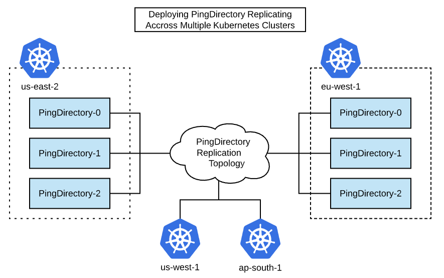
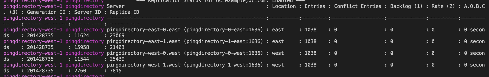
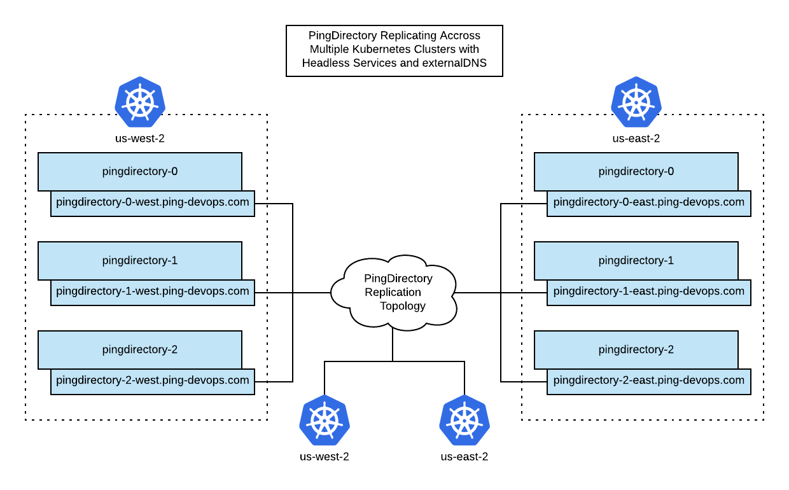
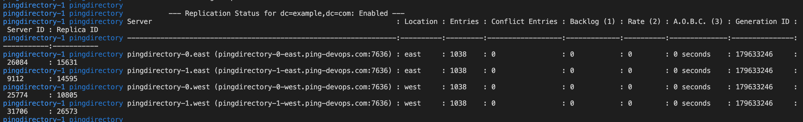
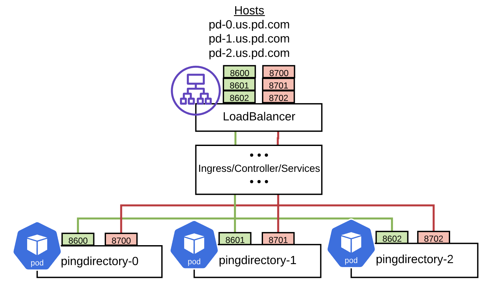
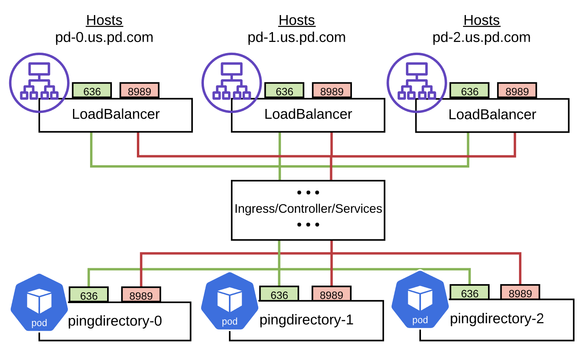
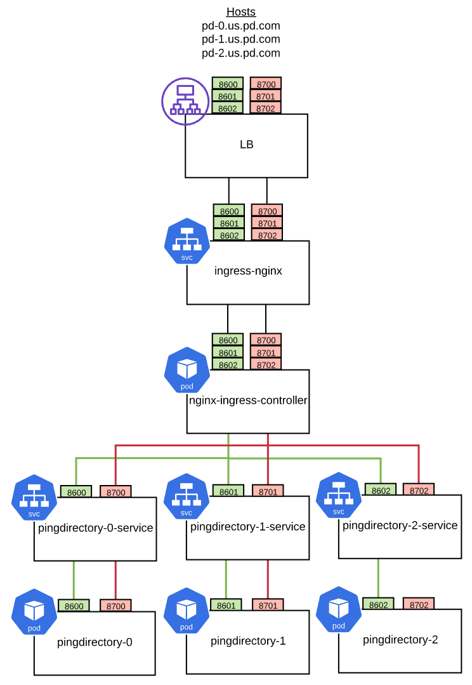

PingDirectory Deployments Across Kubernetes Clusters
This example is an extension of the topic Orchestrate a replicated PingDirectory deployment in Kubernetes orchestration for general use. Here you'll deploy PingDirectory containers across multiple Kubernetes clusters.

Overview
Having a replicated PingDirectory topology across multiple kubernetes clusters is desired for highly-available active/active deployments as well as active/partial-active scenarios where a hot backup is expected.
PingIdentity PingDirectory Docker Images abstract away much of the complexity of replication initialization scripts, even across clusters. Instead, the focus is on providing accessible DNS hostnames across clusters and environment variables to build ordinal hostnames for each Directory instance.
What You'll Do
- PingDirectory Container Keys To Success
- Draft Hostnames - determine the variables needed to create your hostnames
- Additional Variables - for use-case flexibility
- Cluster Startup Background -Walk through what happens when a cluster starts
- Design Infrastructure to Match Hostnames - based on your infrastructure constraints, you may need to alter your hostname plans. Use these reference examples to help.
- Test the Deployment - use the
11-replication-timingfolder to test replication speeds
Because details within each Kubernetes cluster are well-hidden from outside the cluster, external access to each pod within the cluster is required. The PingDirectory images will set up access to each of the pods using load balancers from an external host, to allow each pod to communicate over the LDAP and replication protocols.
PingDirectory Host Naming
The most important aspect of a successful PingDirectory cross-cluster deployment assigning accessible and logical dns hostnames. Rules:
- Each pingdirectory needs it's own hostname avaialable in DNS
- hostname will have a space for the ordinal representing the instance in the statefulset
- all hostnames are accessible to all directory instances
These rules still leave plenty of room for flexibility. Especially when accounting for cluster-native DNS names Kubernetes creates.
Single-Cluster Multiple-Namespace
For example, if you were to simulate a "multi-cluster" environment in a single cluster, you could just set up two namespaces and create a separate ClusterIP service for each directory. It would env up like so:
Primary Cluster
| Pod | Service Name | Namespace | Hostname |
|---|---|---|---|
| pindirectory-0 | pingdirectory-0 | primary | pingdirectory-0.primary |
| pindirectory-1 | pingdirectory-1 | primary | pingdirectory-1.primary |
| pindirectory-2 | pingdirectory-2 | primary | pingdirectory-2.primary |
Secondary Cluster
| Pod | Service Name | Namespace | Hostname |
|---|---|---|---|
| pindirectory-0 | pingdirectory-0 | secondary | pingdirectory-0.secondary |
| pindirectory-1 | pingdirectory-1 | secondary | pingdirectory-1.secondary |
| pindirectory-2 | pingdirectory-2 | secondary | pingdirectory-2.secondary |
External DNS Names
In a Prod Environment with external hostnames it may look more like:
us-west cluster
| Pod | Service Name | DNS / Hostname |
|---|---|---|
| pindirectory-0 | pingdirectory-0 | pingdirectory-0-us-west.ping-devops.com |
| pindirectory-1 | pingdirectory-1 | pingdirectory-1-us-west.ping-devops.com |
| pindirectory-2 | pingdirectory-2 | pingdirectory-2-us-west.ping-devops.com |
us-east cluster
| Pod | Service Name | DNS / Hostname |
|---|---|---|
| pindirectory-0 | pingdirectory-0 | pingdirectory-0-us-east.ping-devops.com |
| pindirectory-1 | pingdirectory-1 | pingdirectory-1-us-east.ping-devops.com |
| pindirectory-2 | pingdirectory-2 | pingdirectory-2-us-east.ping-devops.com |
Variables to Create Hostnames
To provide flexibility on how PingDirectory will find other instances, a full dns hostname is broken into multiple variables.
| Variable | Description |
|---|---|
K8S_POD_HOSTNAME_PREFIX |
The string used as the prefix for all host names. Defaults to name of StatefulSet. |
K8S_POD_HOSTNAME_SUFFIX |
The string used as the suffix for all pod host names. Defaults to K8S_CLUSTER. |
K8S_SEED_HOSTNAME_SUFFIX |
The string used as the suffix for all seed host names. Defaults to K8S_SEED_CLUSTER (discussed later). |
A full hostname is created like:
${K8S_POD_HOSTNAME_PREFIX}<instance-ordinal>${K8S_SEED_HOSTNAME_SUFFIX}
Using Previous Hostname Examples
| hostname | K8S_POD_HOSTNAME_PREFIX | K8S_POD_HOSTNAME_SUFFIX | K8S_SEED_HOSTNAME_SUFFIX |
|---|---|---|---|
| pingdirectory-0.primary | pingdirectory- |
.primary |
.primary |
| pingdirectory-2-us-west.ping-devops.com | pingdirectory- |
-us-west.ping-devops.com |
-us-west.ping-devops.com |
Environment Variables
| Variable | Required | Description |
|---|---|---|
K8S_CLUSTERS |
*** | The total list of Kubernetes clusters that the StatefulSet will replicate to. |
K8S_CLUSTER |
*** | The Kubernetes cluster the StatefulSet will be deployed to. |
K8S_SEED_CLUSTER |
*** | The Kubernetes cluster that the seed server is deployed to. |
K8S_NUM_REPLICAS |
The number of replicas that make up the StatefulSet. | |
K8S_POD_HOSTNAME_PREFIX |
The string used as the prefix for all host names. Defaults to StatefulSet. |
|
K8S_POD_HOSTNAME_SUFFIX |
The string used as the suffix for all pod host names. Defaults to K8S_CLUSTER. |
|
K8S_SEED_HOSTNAME_SUFFIX |
The string used as the suffix for all seed host names. Defaults to K8S_SEED_CLUSTER. |
|
K8S_INCREMENT_PORTS |
true or false. If true, each pod's port will be incremented by 1. |
An example of the YAML configuration for these environment variables:
K8S_STATEFUL_SET_NAME=pingdirectory
K8S_STATEFUL_SET_SERVICE_NAME=pingdirectory
K8S_CLUSTERS=us-east-2 eu-west-1
K8S_CLUSTER=us-east-2
K8S_SEED_CLUSTER=us-east-2
K8S_NUM_REPLICAS=3
K8S_POD_HOSTNAME_PREFIX=pd-
K8S_POD_HOSTNAME_SUFFIX=.us-cluster.ping-devops.com
K8S_SEED_HOSTNAME_SUFFIX=.us-cluster.ping-devops.com
K8S_INCREMENT_PORTS=true
LDAPS_PORT=8600
REPLICATION_PORT=8700
These environment variable settings would map out like this:
| Seed | Pod | Instance | Host name | LDAP | REPL |
|---|---|---|---|---|---|
| CLUSTER: us-east-2 | |||||
| *** | *** | pingdirectory-0.us-east-2 | pd-0.us-cluster.ping-devops.com | 8600 | 8700 |
| pingdirectory-1.us-east-2 | pd-1.us-cluster.ping-devops.com | 8601 | 8701 | ||
| pingdirectory-2.us-east-2 | pd-2.us-cluster.ping-devops.com | 8602 | 8702 | ||
| CLUSTER: eu-west-1 | |||||
| pingdirectory-0.eu-west-1 | pd-0.eu-cluster.ping-devops.com | 8600 | 8700 | ||
| pingdirectory-1.eu-west-1 | pd-1.eu-cluster.ping-devops.com | 8601 | 8701 | ||
| pingdirectory-2.eu-west-1 | pd-2.eu-cluster.ping-devops.com | 8602 | 8702 |
Cluster Startup Walkthrough
Yes, that was a ton of variable conversation. This is done to for flexibility to accommodate various infrastructure constraints. For example, in some environments you cannot use the same port for each instance, so we must accommodate incrementing ports.
Next, it's helpful to know what happens when a cluster starts, to understand why the initial creation of a cluster must be very prescriptive.
- The first pod must start on it's own and become healthy. This is critical to prevent replication islands. The very first time the very first pod starts, we call it "GENESIS". All other pods are dependent on this
SEED_PODin theSEED_CLUSTERstarting correctly on it's own. The entire purpose of definingSEED_PODandSEED_CLUSTERvariables is avoid multiple genesis scenarios.
Since we are deploying a statefulset, you can deploy the entire first cluster at once. Statefulsets create one pod in the number of replicas at a time.
- once the first pod is healthy, it begins dns querying combinations of hostnames at their LDAPS port to find another Directory instance.
In our first cluster, this would be the hostname of pingdirectory-1. but it could also be pingdirectory-0 of another cluster. Once the query returns successful, creation of the replication topology automatically begins.
- From this point onward, the order in which instances start is less important.
Note on Replication Traffic
It may not always be clear what truly happens during "replication". Though it is partially proprietary, you can think of it like so:
-
A modify request arrives at one pod.
-
The corresponding Directory instance, say pingdirectory-0, makes the change locally, and tracks the change in the changelog.
-
Then it broadcasts the change out to all other instances with the time of change. This request is added to a message queue of sorts on the other instances and processed in order.
If you think about this, it starts to make sense why horizontal scaling of directories isn't something to be taken lightly.
Reference Modes of Deployment
There are multiple types of deployments that have been tested because of various infrastructure constraints. There will be discussed here.
The example files in 09-multi-k8s-pingdirectory show that the biggest key is having a way to provide an accessible hostname to all the other pods. In most examples this is done by creating a service name and using statefulset.kubernetes.io/pod-name as the selector to isolate one pod.
Multi-cluster Simulations
These are examples for demo environments to get a feel for what a multi-region deployment looks like.
Single Namespace
20-kubernetes/09-multi-k8s-pingdirectory/01-single-namespace
This is the least constrained example. It's good to just see what logs on a cross-cluster topology look likes
- relies only on dns names that kubernetes provides.
- All traffic is in one namespace so it should have no network constraints.
kubectl apply -f 01-west.yaml
...wait for pingdirectory-0 to be healthy...
kubectl apply -f 02-east.yaml
note, logs with stern look better.
brew install stern
watch the logs
stern pingdirectory
or
kubectl logs -f -l role=pingdirectory
Once the all the instances are up and running, you should see something similar to:

Single Cluster Multiple Namespaces
20-kubernetes/09-multi-k8s-pingdirectory/02-single-cluster-two-namespaces
This example can be used when you only have one cluster available for testing
The files in this example are templates and expect namespaces to be added.
export NAMESPACE_1=<west-namespace>
export NAMESPACE_2=<east-namespace>
envsubst < 03-multi-cluster-dns/01-west.yaml | kubectl apply -f -
envsubst < 03-multi-cluster-dns/02-east.yaml | kubectl apply -f -
Then watch logs.
VPC Peered K8s Clusters
These example should be possible in most kubernetes providers as long as you can:
- give external dns names to clusterIP services
- have replication and ldaps ports peered (open) between clusters
Consider the EKS Peering Config example if you want to test this.
Using External DNS Names

20-kubernetes/09-multi-k8s-pingdirectory/03-multi-cluster-dns
This example uses Headless Services instead of regular clusterIp services. This is necessary in a VPC peered environment because typically the route-tables and ip ranges you've peered correspond to container ip addresses, not service addresses. If you were to use clusterIp addresses, the instances may, unexpectedly, not have network connectivity to each other.
The headless services use externalDNS to dynamically add records to the DNS provider (example, Route53)
This example likely requires some more care, you'll want to sift through the yamls to understand what is going on.
Once the example is stood up, you will see logs similar to:

Without VPC Peering
Some organizations do not allow VPC peering, or similar networking functions. Or, there may be no way to create external hostnames on clusterIp services. Here are some examples that may help.
Using NodePorts
In a scenario where you do not have VPC peering, or must create external DNS names manually, it may be beneficial to use NodePorts.
To do this:
- Use the
20-kubernetes/09-multi-k8s-pingdirectory/03-multi-cluster-dnsexample as reference - Make the pod-selector services NodePort services instead of clusterIp.
- Optionally, remove the external name, and create a routable dns name. If these names are being manually, then create the services and assign names before starting the statefulset.
Single Load Balancer
Caution
The following examples are for extremely constrained environments, where traffic must go out through an external load balancer. For many purposes, these can be considered deprecated. Doing replication through load balancers should be avoided when possible.
Here's a diagram of how a single load balancer can be used:

Advantages
- Decreased cost of a single load balancer
- Single IP required
- Easier DNS management
- Wildcard DNS domain
- Or separate hosts pointing to load balancer
Disadvantages
- More port mapping requirements
- Many external ports to manage and track
Multiple Load Balancers
Here's a diagram of how a single load balancer can be used:

Advantages
- Use the same well-known port (such as, 636/8989)
- Separate IP addresses per instance
Disadvantages
- DNS management
- Separate hostname required per instance
StatefulSet Pod Services
The StatefulSet service manages stateful objects for each pod.
An example of the StatefulSet service configuration (one pod):
kind: Service
apiVersion: v1
metadata:
name: pingdirectory-0-service
spec:
type: ClusterIP
selector:
statefulset.kubernetes.io/pod-name: pingdirectory-0
ports:
- protocol: TCP
port: 8600
targetPort: 8600
name: ldaps
- protocol: TCP
port: 8700
targetPort: 8700
name: repl
Additional Kubernetes Resources Required
In addition to the StatefulSet, other resources are required to properly map the load balancers to the pods. This diagram shows each of those resources:

DNS
A DNS entry will be required at the load balancer to direct a wildcard domain or individual host names
to the load balancer created by the NGINX Ingress Service or Controller. For AWS, this can simply be an A record alias for each host, or a wildcard A record for any host in that domain.
NGINX Ingress Service and Controller
Several components map the ports from the external load balancer through the NGINX Service and Controller:
- External load balancer
Provides an external IP and obtains definitions from the Ingress NGINX Service.
- Ingress NGINX Service
Maps all port ranges (SEED_LDAPS_PORT, SEED_REPLICATION_PORT) to the same target port range.
- NGINX Ingress Controller
Maps all port ranges to stateful set pods.
Warning
Typically, the NGINX Service and TCP services (see the following NGINX TCP services topic) require additional namespace access (such as, ingress-nginx-public). Any additional applications using this service or controller will generally require additional privileges to manage this resource.
An example of the NGINX Service configuration:
kind: Service
apiVersion: v1
metadata:
name: ingress-nginx
labels:
app.kubernetes.io/name: ingress-nginx
app.kubernetes.io/part-of: ingress-nginx
app.kubernetes.io/role: ingress-nginx-public
namespace: ingress-nginx-public
annotations:
service.beta.kubernetes.io/aws-load-balancer-type: nlb
spec:
selector:
app.kubernetes.io/name: ingress-nginx
app.kubernetes.io/part-of: ingress-nginx
app.kubernetes.io/role: ingress-nginx-public
externalTrafficPolicy: Local
type: load-balancer
ports:
- name: http
port: 80
targetPort: http
- name: https
port: 443
targetPort: https
- name: ldaps-pingdiretory-0
port: 8600
targetPort: 8600
- name: ldaps-pingdiretory-1
port: 8601
targetPort: 8601
- name: ldaps-pingdiretory-2
port: 8602
targetPort: 8602
- name: repl-pingdiretory-0
port: 8700
targetPort: 8700
- name: repl-pingdiretory-1
port: 8701
targetPort: 8701
- name: repl-pingdiretory-2
port: 8702
targetPort: 8702
NGINX TCP Services
The ConfigMap for TCP services (tcp-services) provides the mappings from the target ports on the NGINX Controller to the associated pod service.
You'll need to replace the variable
${PING_IDENTITY_K8S_NAMESPACE}with the namespace that your StatefulSet and Services are deployed into.
An example of the ConfigMap for the NGINX TCP services configuration:
apiVersion: v1
kind: ConfigMap
metadata:
name: tcp-services
namespace: ingress-nginx-public
labels:
app.kubernetes.io/name: ingress-nginx
app.kubernetes.io/part-of: ingress-nginx
app.kubernetes.io/role: ingress-nginx-public
data:
8600: "${PING_IDENTITY_K8S_NAMESPACE}/pingdirectory-0-service:8600"
8601: "${PING_IDENTITY_K8S_NAMESPACE}/pingdirectory-1-service:8601"
8602: "${PING_IDENTITY_K8S_NAMESPACE}/pingdirectory-2-service:8602"
8700: "${PING_IDENTITY_K8S_NAMESPACE}/pingdirectory-0-service:8700"
8701: "${PING_IDENTITY_K8S_NAMESPACE}/pingdirectory-1-service:8701"
8702: "${PING_IDENTITY_K8S_NAMESPACE}/pingdirectory-2-service:8702"
Deployment Example
The examples in 20-kubernetes/05-multi-k8s-cluster-pingdirectory will create an
example deployment across 3 clusters in AWS EKS:
- us-east-2 (SEED Cluster)
- eu-west-1
First, deploy the nginx services and configmap for the example. This will allow
the services to be reached by the nginx controller via an AWS Network Load
Balancer (nlb). You must run these with a aws/kubernetes profile allowing for
apply into the ingress-nginx-public namespace. Also, be aware that there may
already be other definitions found. You may need to merge.
kubectl apply -f nginx-service.yaml
kubectl apply -f nginx-tcp-services.yaml
The cluster.sh script will create the .yaml necessary to deploy a set of Ping
Directory instances in each cluster and replication between.
Usage: cluster.sh OPERATION {options}
where OPERATION in:
create
apply
delete
where options in:
--cluster {cluster} - Cluster name used to identify different
env_vars.pingdirecory files
--context {context} - Name of Kubernetes context.
Defaults to current context:
jsmith.ping-dev-aws-us-east-2
-d,--dry-run - Provides the commands
Example:
cluster.sh create --cluster us-east-2
Steps To Create .yaml For us-east-2
Replace your-cluster-name with the name use are using. Using the cluster name
us-east-2, the script will generate a .yaml using kustomize, using the files:
multi-clusterkustomization.yamlpingdirectory-service-clusterip.yamlenv_vars.pingdirectory(built from env_vars.pingdirectory.multi-cluster and us-east-2)
basekustomization.yamlhttps://github.com/pingidentity/pingidentity-devops-getting-started/20-kubernetes/03-replicated-pingdirectoryenv_vars.pingdirectorylimits.yaml
./cluster.sh delete \
--cluster us-east-2 \
--context <your-cluster-name> \
--dry-run
This will create a .yaml called ouptut-us-east-2.yaml.
Next, ensure that your devops-secret and tls-secret are created.
ping-devops generate devops-secret | kubectl apply -f -
ping-devops generate tls-secret ping-devops.com | kubectl create -f -
and create the instances using the generated output-us-east-2.yaml.
kubectl create -f output-us-east-2.yaml